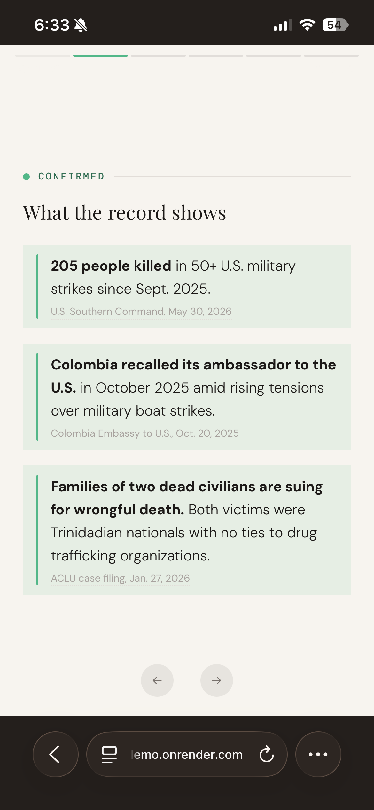
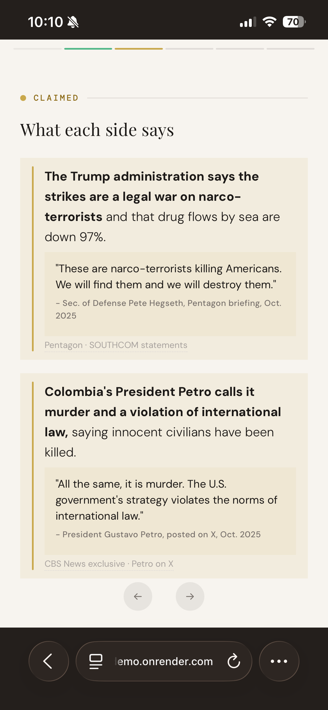
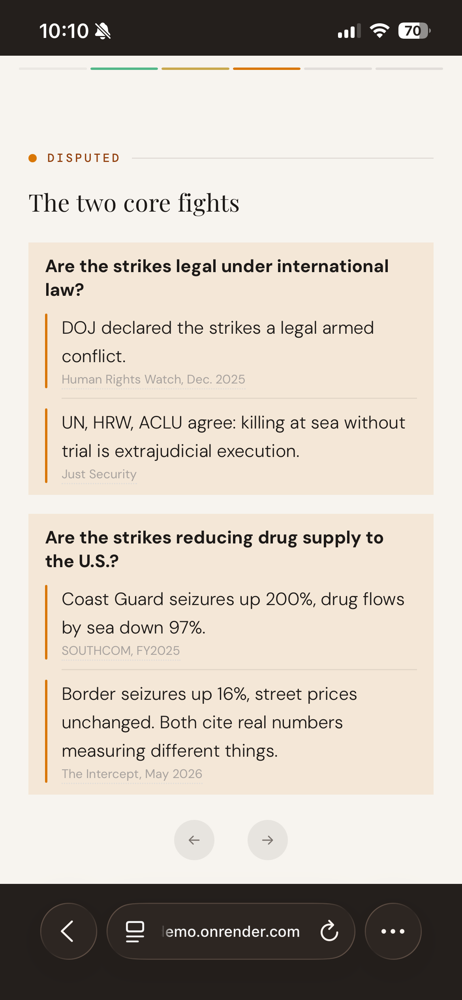
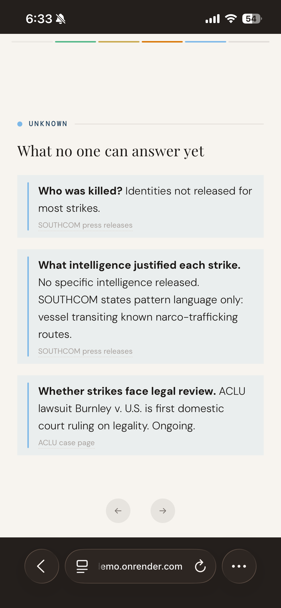
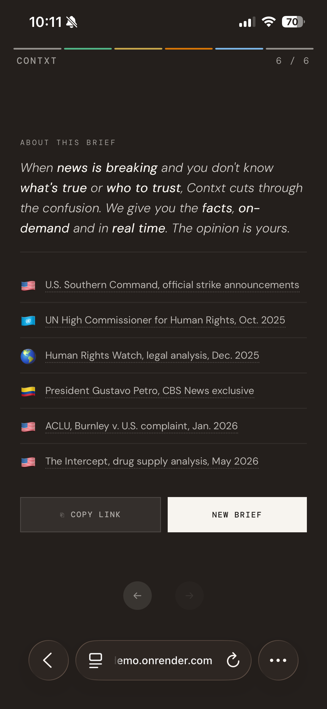

We give you all sides of the story as it develops, on-demand and in real time. 30 seconds of reading lets you form your own view and move on.
Get early accessContxt pulls from established news institutions and primary sources. It organizes confirmed facts, claims, disputes, and unknowns without making a verdict. Every brief is auditable, sourced entirely from original reporting and primary documents. AI generated content is never used as a source.





U.S. drug boat strikes, June 2026.
Try the demo →Contxt grew out of work launching Footnotes at TikTok, a product built to correct and clarify misleading videos. For breaking news, it was clear that correction misses the point.
A developing story needs a real-time picture of what is known, what is changing, and what is still missing. That's what Contxt is built to provide.
Contxt is in active development. For more information or early access, reach out at hello@contxt.news.